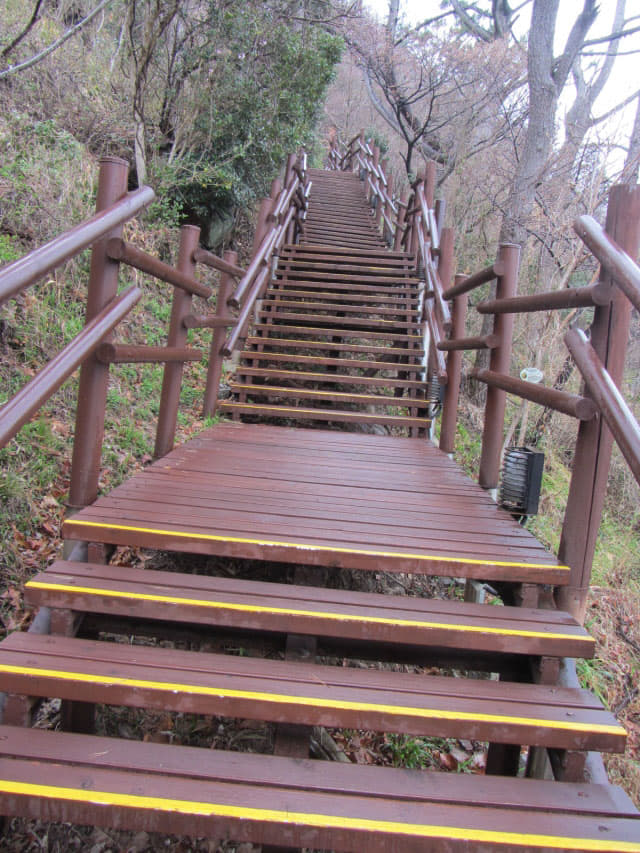

決定不乘單軌纜車往葛頭山獅子峰上的土末展望台, 改為沿山路前往, 撐傘離開土末單軌纜車站, 循海邊的步道急急走約七分鐘, 來到了地角東面的彎角處, 接著是頗為陡斜的樓梯登山路段, 沒有剛才走得那麼輕鬆了!
一段又一段的樓梯, 考驗登山者的意志。
接著是一段山路。
接著是長長蜿蜒於山中的樓梯, 從這裡一直伸延到山頂。

沿途的分叉路口都有標示的。如果往獅子峰上的土末展望台, 一直往上走便是。
看看我現在的位置……. 什麼? 仍然在葛頭山的山麓!
唯有繼續努力吧!

大海一片迷濛, 聽說在天氣晴朗的時候, 放眼遠望, 濟州島漢拏山猶如近在咫尺, 如果可以看到, 猶如回應第一段的濟州島行程, 這旅程就更加完美了。

接著的一段最「攞命」, 除了陡斜外, 左曲右曲, 可以用九曲十三彎來形容。
途中的觀景台。
繼續往上走, 仍然是看不到盡頭的樓梯, 單看這一段可能已嚇怕很多人! 從土末單軌纜車站開始, 至今沿途一個人也沒碰上, 更加害怕。
回頭向下望望。
越走越高, 再回頭望望, 勉強看到剛剛走的一段九曲十三彎樓梯, 從這裡看, 好像疊在一起的。
繼續往上走, 終於看到好像是樓梯的盡頭了。
土末展望台
急急往上衝, 走完最後的一段樓梯, 迎面是設計好像火炬的土末展望台, 終於來到葛頭山的山頂了!